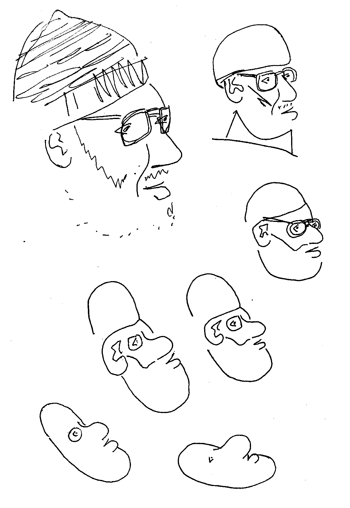
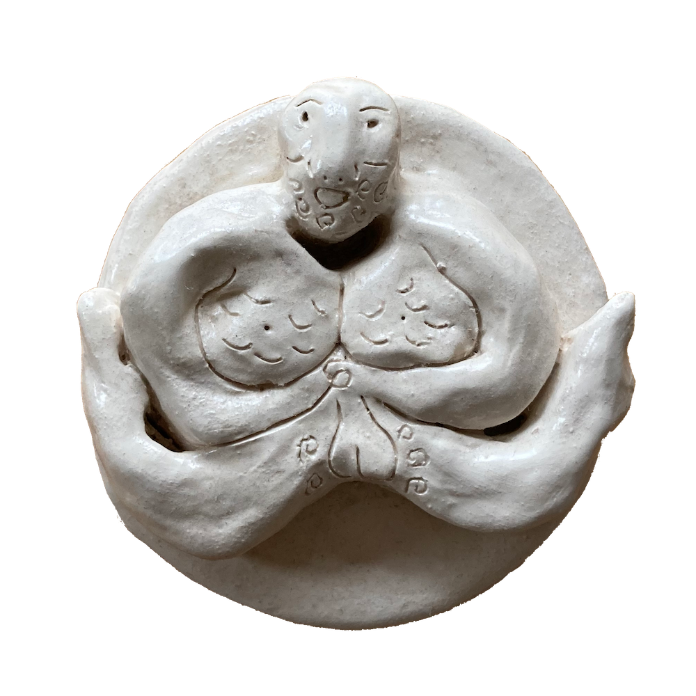
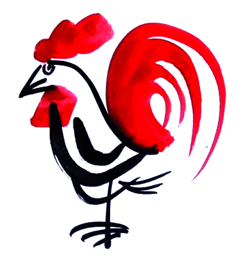
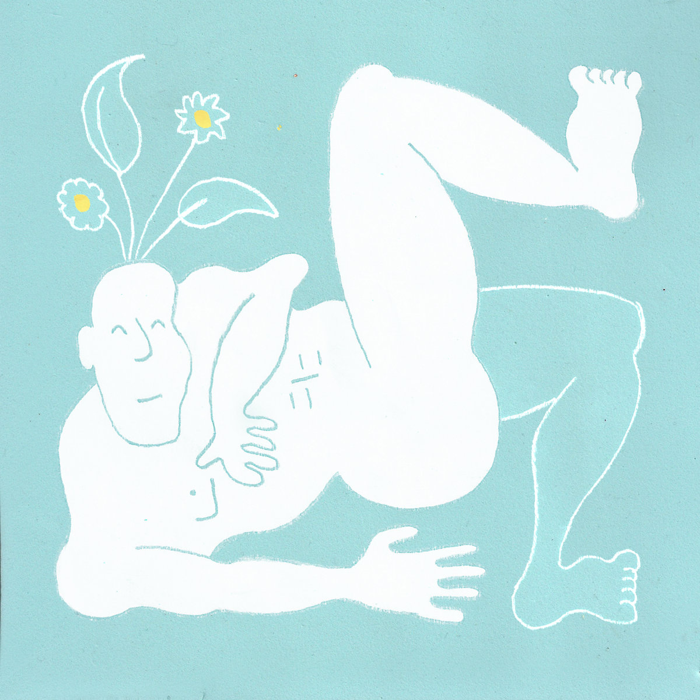
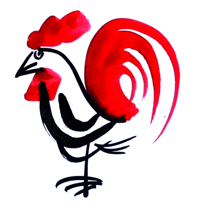
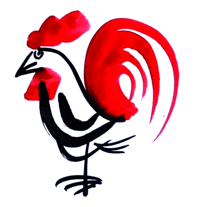

howdy!

howdy!
this is a website for
CRUMB DOUGLAS
CRUMB DOUGLAS

living Yourself:
an album i recorded in 2020. acoustic songs decorated with electricity.

Prawn Tempo-ra & Chicken Key-ev:
a pair of musical tools for tempo timing and key/chord transposing, respectively.

Crumbs of Heaven:
a countryside album. a rough and janky interpretation of pop.
 
